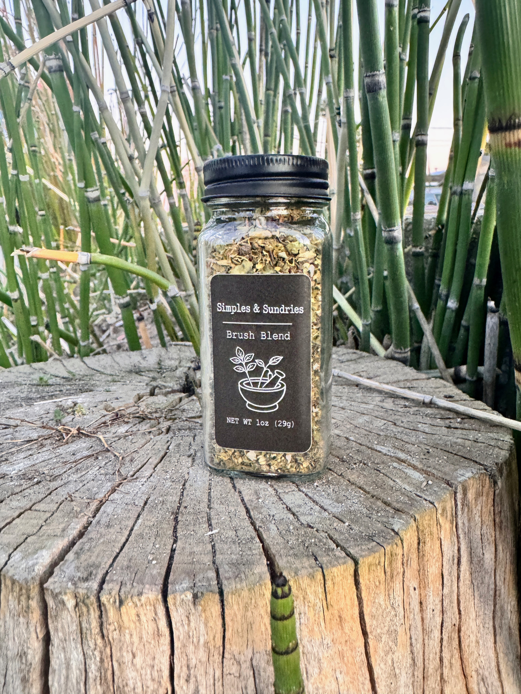
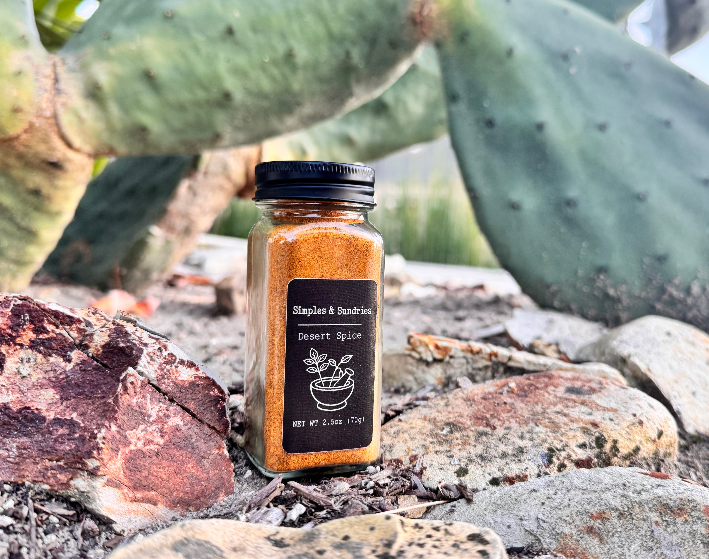

Small-batch seasoning blends
Simple ingredients.
Remarkable flavor.
Thoughtfully blended seasonings made to bring warmth, flavor, and a little something special to everyday meals.
Explore Our Blends

Warm · Savory · Versatile
Canyon Rub
A bold, savory blend designed to bring depth and warmth to everyday meals. Canyon Rub works especially well with grilled and roasted foods.
Best with: chicken, shrimp, steak, roasted potatoes, and grilled vegetables.

Savory · Bright · Umami
Coastal Blend
A balanced, umami-forward seasoning that complements delicate flavors without overwhelming them.
Best with: fish, shrimp, roasted vegetables, rice, and light pasta dishes.

Herbal · Fresh · Savory
Brush Blend
An herb-forward blend with fresh, savory notes that add an easy layer of flavor to simple meals.
Best with: roasted vegetables, chicken, pasta, potatoes, and focaccia.

Bold · Warm · Spicy
Desert Spice
A versatile blend with warm spices and a lively kick, made for meals that need a little more energy.
Best with: meat, eggs, potatoes, vegetables, and grain bowls.
About Us
We are so glad you found us! We are the Andersons. Philip was born and raised in Seattle, Washington, while Jordana grew up between Tacoma, Washington, and Beppu, Japan. Since getting married in 2023, we’ve made our home in Santa Cruz, California.
We share a love of delicious homemade food and enjoy bringing together flavors inspired by our different backgrounds. Whether we’re cooking for family, hosting friends, or trying a new recipe together, food has always been one of the ways we connect with the people we love. Starting Simples & Sundries felt like the perfect way to share that passion with others.
Simples & Sundries was created from a love of good food, approachable cooking, and the pantry staples that make everyday meals feel special. Our seasoning blends are mixed in small batches using hand-selected ingredients, making them easy to use, versatile, and full of flavor. We hope they inspire you to create meals you’ll enjoy sharing with the people around your own table. Thank you for being part of our journey!
Get in touch
Bring Simples & Sundries to your table
Email: simplesandsundries@gmail.com, online shop: , Instagram:
Contact Us